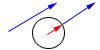

The Area of a Parallelogram (1)
The Area of a Parallelogram (2)
Inner Products
Division Vector
Vector and field(1)
Vector and field(2)
Line and Dot product
Ceva's Theorem
Menelaus's Theorem
Cramer's rule
Distributive Law for Alternate Product
Circle of Apolonius
Commutative Law for Inner Product
Distributive Law for Inner Product

Unit Vector
Angle Bisector
Vector Equation of Line
Vector Equation of Line in 3D
Intersection Point of Vector
Vector and Circle
Problem of Dot(Inner) Product
Sum of Vectors
Midpoint of Side of Quadrilateral and Parallelogram
Locus of Dot(Inner) Product=const.
Linearly Independent of Vector
Euler Line
Probem of Regular Hexagon
Equation of Plane
Subtraction of Vector
Information of Products